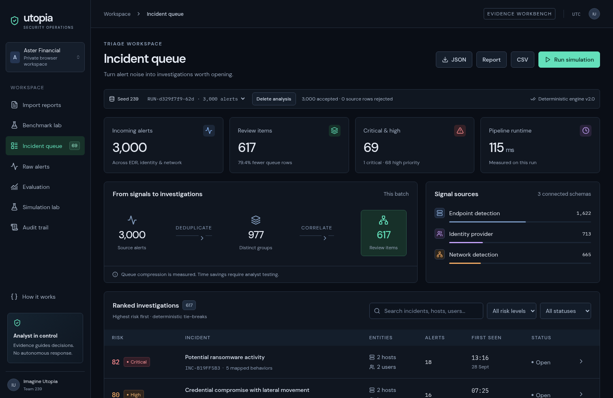
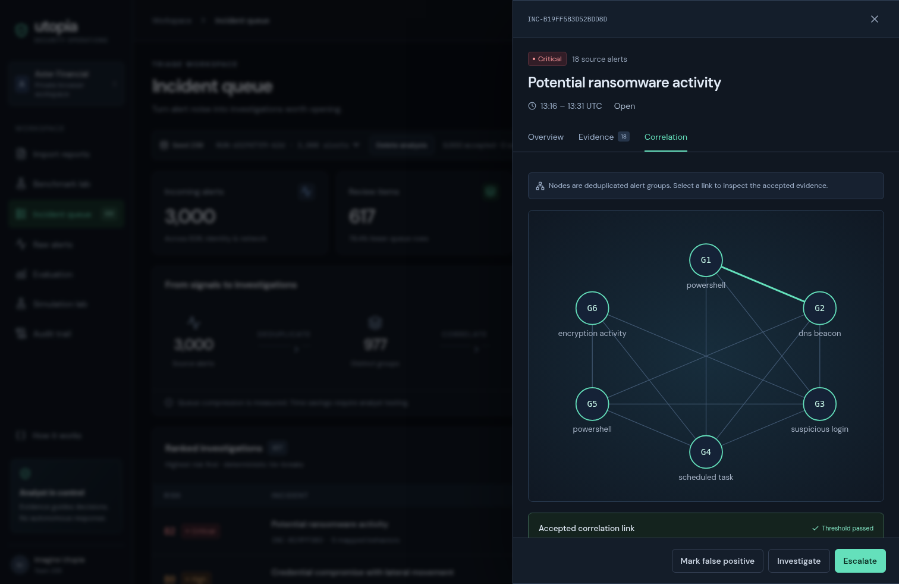
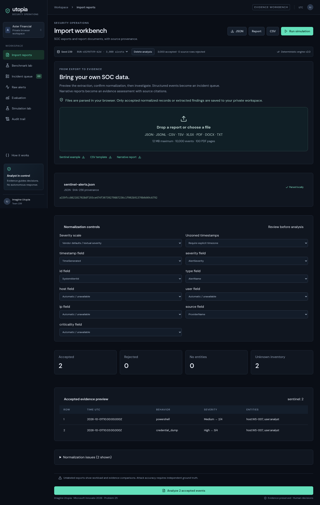
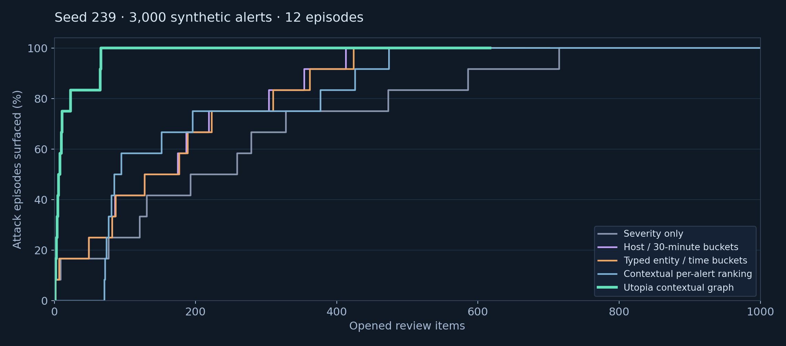
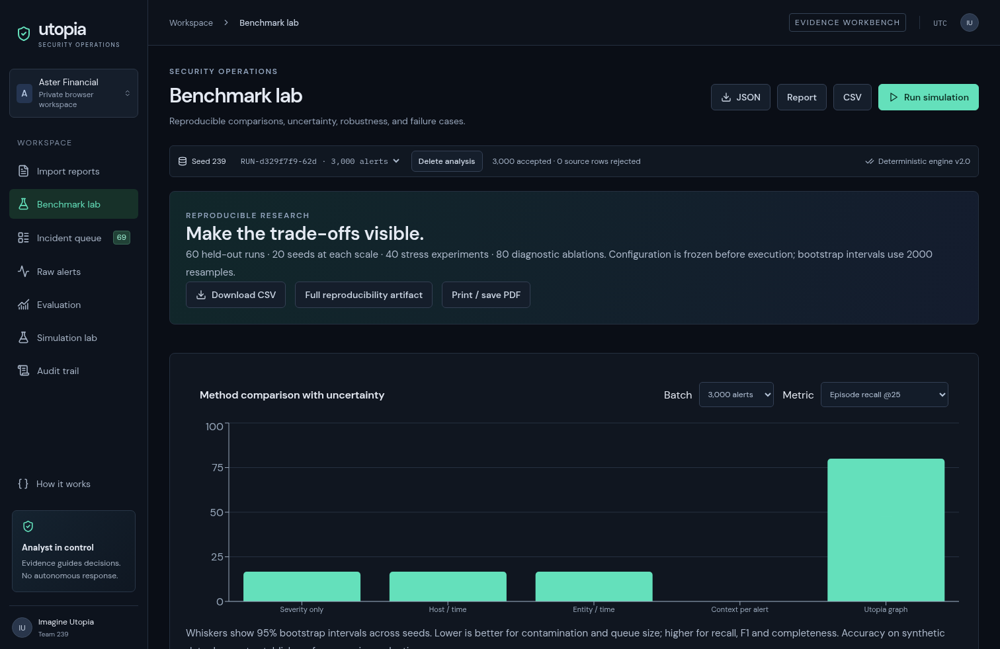

CONNECT
Bring entity and time evidence together across identity, endpoint, and network alerts.
Utopia SOC
Transparent grouping. Human decisions. Measured coverage.
Bring entity and time evidence together across identity, endpoint, and network alerts.
Expose asset context, behavior progression, and each risk component.
Measure how many attack episodes become visible for a given review budget.
Validate → deduplicate → correlate → ATT&CK map → classify → score → rank
Every source alert is retained. Every accepted link has a reason.
Simulation truth → evaluation only. No labels in engine inputs.
Facts packet → verified template / optional model brief.
Analyst decision → versioned state + SHA-256 audit chain.
120 hosts · 160 users · 72-hour alert batch. Causal state prerequisites and seeded raw events.
Phishing / exfiltration · identity compromise · ransomware · command and control.
Sensor dropout · duplicates · missing entities · shared hubs · concurrency · timing and severity noise.



B0 Severity only — one alert per review item
B1 Host / 30-minute buckets
B2 Exact typed-entity sets / time buckets
B3 Contextual per-alert ranking
UT Contextual entity graph + deterministic score
Episode surfaced = at least one of its alerts in an opened item.
Pairwise grouping quality separately measures reconstruction.

Utopia mean across held-out 3,000-alert runs. B0 mean: 17%.
Utopia mean. Severity-only: 589.8 items. Total Utopia queue: 624.8.
Mean benign contamination: 3.7%. Surfacing is not full reconstruction.

Seed 801, 3,000 alerts. Frozen entity windows no longer connect many stages.
Pairwise recall: 17.8%. Full coverage takes 267 items.
Measure wider windows, contamination, and segmentation on separate tuning data; never hide the trade-off.
Implemented: simulation, ingest, correlation, evidence, scoring, dashboard, decisions, audit, baselines, benchmarks.
Live brief: deterministic template; optional model adapter is in source.
AIT-ADS check: checksum verified; 3,000 Wazuh records accepted / 400 AMiner rejected. No gold attack accuracy inferred.
Audit: trusted-head tamper evidence; no external anchoring.
No autonomous response, compliance guarantee, or production accuracy claim.
Can transparent grouping surface attack episodes with fewer opened review items?
Synthetic evidence: improved episode visibility, with declining recall and modest grouping F1 as scale increases.
Next: independently labeled external data, a real analyst study, and measured review effort.